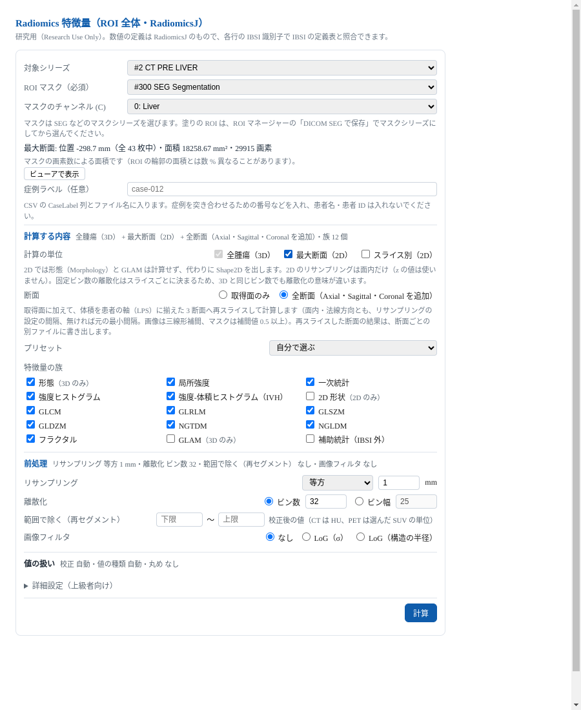
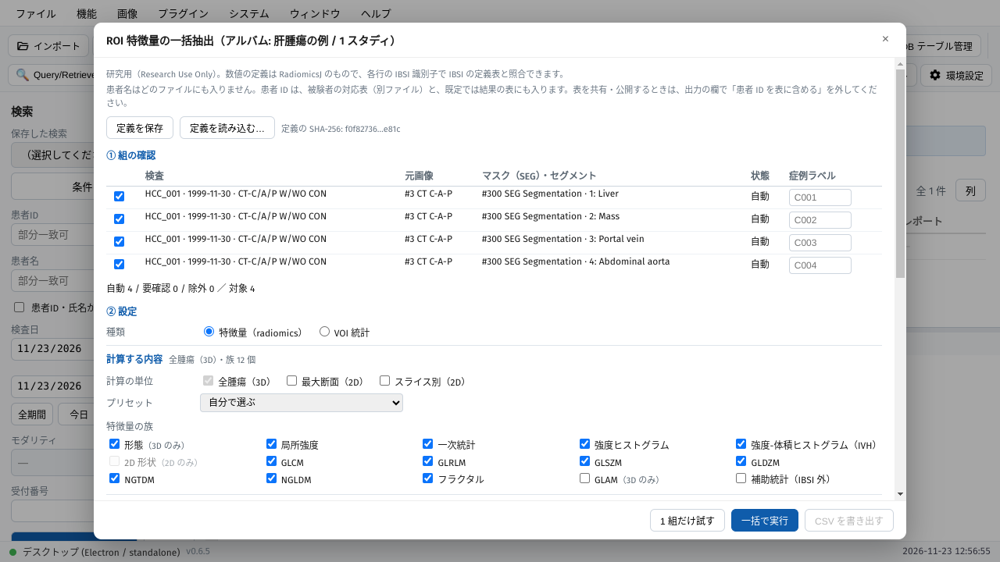
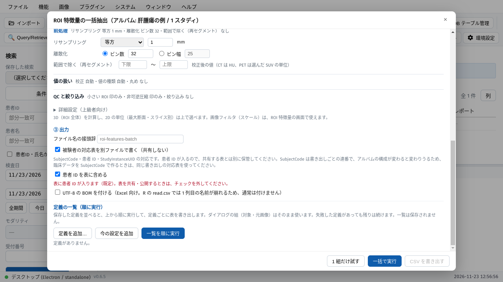
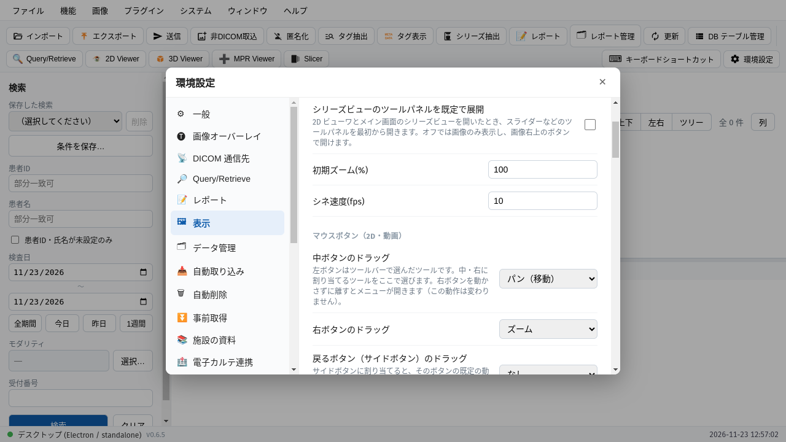
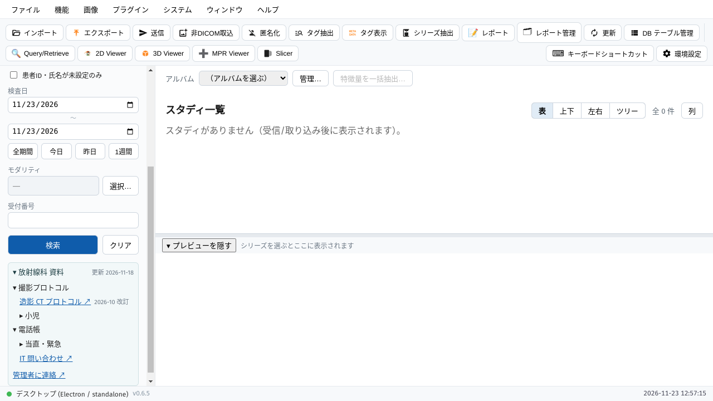
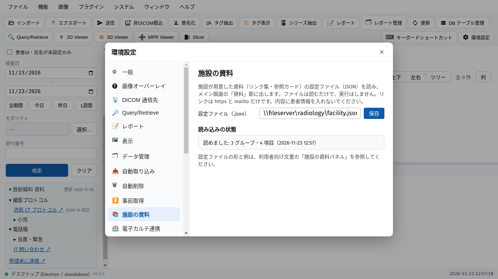

GRAPHY-NEXT v0.6.5 / 操作ガイド
ROI の特徴量（radiomics）の画面と一括抽出の整理、マウスの中・右・サイドボタンへのツール割り当て、施設の資料（リンク集・参照カード）を中心に、v0.6.5 の変更をまとめます。
ROI 特徴量の画面全断面の 2D、設定の群分け、項目の説明
特徴量の一括抽出定義の保存、患者 ID の扱い、QC
マウスのボタン割り当てと、施設の資料環境設定で選び、メイン画面の「資料」節に出す
そのほかの変更検索の「今日」・エクスポート・ウィンドウほか
01 / 2D Viewer ＞ 解析 ＞ ROI 特徴量

計算の単位: 全腫瘍（3D）に加えて、最大断面（2D）・スライス別（2D）を選べます。2D では形態と GLAM は計算せず、代わりに Shape2D を出します
断面: 「全断面」を選ぶと、取得面に加えて、体積を患者の軸（LPS）に揃えた Axial・Sagittal・Coronal の 3 断面へ再スライスして計算します。結果は断面ごとのファイルに書き出されます
前処理: リサンプリング・離散化・範囲で除く（再セグメント）・画像フィルタをまとめました。群の見出しの横に、いま選んでいる内容が 1 行で出ます
値の扱い: 校正（PET は SUV・SUL。既定は SUVbw）・値の種類（離散・連続・任意単位）・丸めです。値の種類で、強度-体積ヒストグラム（IVH）のモードと、補間後の丸めが切り替わります
各項目には、意味の概要を見られる説明（ツールチップ）が付きました。2D の小さい ROI は QC で知らせ、再スライスした断面は画面にも表示します。
02 / メイン画面 ＞ アルバム ＞ 特徴量を一括抽出…

① 組の確認: 検査・元画像・マスク（SEG）のセグメントの組を確かめます。除外や、症例ラベルの入力もここで行います
計算する内容: ROI 特徴量の画面と同じ群です。一括抽出でも、2D の単位と全断面を選べます
定義を保存・読み込む: 設定を定義として保存し、あとで読み込めます。定義の SHA-256 も表示されます

QC と絞り込み: 小さい ROI・非可逆圧縮の画像の扱い（印のみ など）と、絞り込みを選びます
患者 ID を表に含める: 既定でオンです。表を共有・公開するときは、チェックを外してください（画面にも注意が出ます）
定義の一覧: 保存した定義を並べて、上から順に実行します。定義ごとに表を書き出します
画素間隔（スライス厚）が組の間でそろっていないときは、実行の前に知らせます。CLI も患者 ID を既定で含み、--no-patient-id で外せます。
03 / 環境設定 ＞ 表示・施設の資料

中ボタンのドラッグ: 左ボタンはツールバーで選んだツールです。中・右に割り当てるツールを、ここで選びます（2D・動画ビューア）
右ボタンのドラッグ: 動かさずに離したときにメニューが開く動作は変わりません
戻る・進むボタン（サイドボタン）: 割り当てると、そのボタンの既定の動作（ページの戻る・進む）は止まります。「なし」のままなら従来どおりです

施設が用意したリンク集と参照カード（撮影プロトコル、電話帳など）が、メイン画面の左側の「資料」の節に出ます。設定が無いときは、節そのものを出しません

設定ファイル（.json）の場所を入れて［保存］します。共有フォルダの 1 ファイルを置き換えるだけで、再起動なしに内容が変わります
読み込みの状態: 読めたグループと項目の数が出ます。内容に問題があるときは、ファイル全体を採用せず、直前の内容を出し続け、理由と場所を示します
リンクは https と mailto だけです。ファイルは読むだけで実行しません。患者情報は入れないでください。画面の資料と共有フォルダは、撮影のための例です（実在しない相手を指しています）。
04 / そのほか
詳しい変更の一覧は、リリースノート（GitHub の Releases）を参照してください。